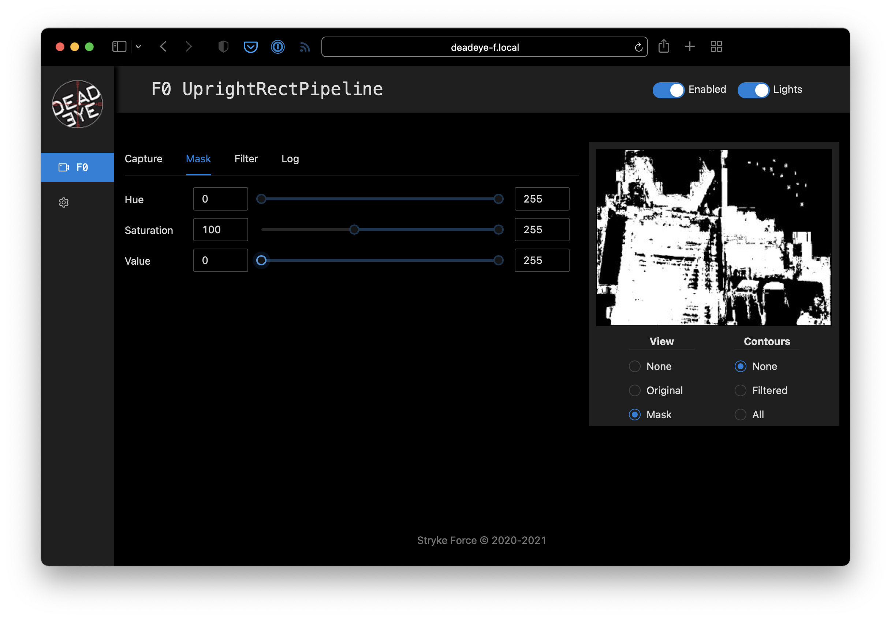

Configure Vision Pipeline
This example assumes you have a Deadeye unit configured with the
UprightRectPipeline and you can access its admin dashboard from your browser.
Note: The quickstart pipeline tuning process outline below is good enough for our single target test image. Real-world usage requires more careful tuning that takes into account varying field positions and lighting conditions.
Image Capture
Start by using Capture ➔ Type ➔ Image Upload dashboard option to upload a test image of a target.
{kind=link}

Mask Target
Aquire contours that surround target reflections by adjusting the pipeline mask parameters.
Note: You can make the hue, saturation, and value adjustments in any order, but we usually adjust value last and keep as wide a value range as possible to account for different target viewing distances.
Since the reflected light from the retro-reflective tape is a saturated color we start by adjusting the Mask ➔ Saturation lower bound. While watching the preview, increase the lower bound to a value that starts to remove low-saturation pixels but retains all the target pixels that we are interested in.
We use a specific green-colored light to illuminate the target so we can filter out other colors by adjusting the Mask ➔ Hue lower and upper bounds until just before the target pixels start to disappear.

Finally, since the retro-reflective target tape creates a bright reflection, we adjust the Mask ➔ Value lower-bound to remove dim pixels and clean up the reflected target mask.

Filter Contours
Our masked test target image contains spurious contours that need to be filtered out. Set Preview ➔ Contours ➔ Filtered and adjust the filters until you just have a single contour around the target left.
Note: When tuning filters for an actual robot, some of the filter parameters may be affected by camera viewing angle and distance as the robot moves around the field. Be sure to test thoroughly!

The following adjustments can be made to filter contours.
- Area: The ratio of the contour area to the total image area.
- Solidity: The ratio of the contour area to the convex shape that covers the entire contour.
- Aspect: The ratio of width to height of the bounding box for the contour.
Pipeline Logging
Logging can be enabled in the dashboard to assist troubleshooting during competitions. Here's an example of logging output from the pipeline we just configured.